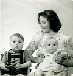
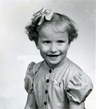
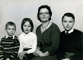
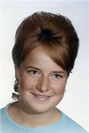
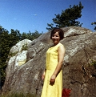
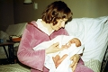
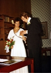
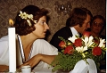

Rut Gullan Viveka Fredman
Skötare/vårdarinna inom särskilt boende.
| Född: | 1947-11-29 Kristineberg, Björksele fs, Lycksele sn. | |
|---|
| Utbildad: | 1963 Robertsfors (AC). | Husmodersskolan. |
|---|
| Utbildad: | 1964 Stockholm. | Sjukvårdsbiträdesutbildning, 23 veckor. |
|---|
| Utbildad: | 1969 Vindelns folkhögskola, Vindelns kn. | Gymnasiekompetens 2 år, 1969-1971. |
|---|
| Utbildad: | 1989 Umeå. | Vårdgymnasiet, undersköterska, mentalskötare. |
|---|
| Levde: | 1991 Djupviksg 1 B, I, Holmsund, Holmsunds fs, Umeå kn. [1] | |
|---|
| Levde: | 2005-08 Skogsfruvägen 7 D, Umeå. | |
|---|
| Levde: | 2008 Skogsfruvägen 7 D, Umeå. [2] | |
|---|
| Levde: | 2010-09 Kragvägen 175, Röbäck, Umeå kn. [2] | |
|---|
| Levde Sambo: | 1971 Matrosv 3, Umeå, Umeå lfs, Umeå kn. |
|---|
| Barn: |
|---|
| Aron Mandor Andreas Fredman (1972 - ) |
| Vigsel: | 1977-09-17 Skellefteå stadshus, Skellefteå. |
|---|
| Levde: | 1981 Vinkeln 3, Obbola, Holmsund, fs, Umeå kn. [3] |
|---|
| Skilsmässa: | 1984-10-17 Vinkeln 3, Obbola, Holmsund, fs, Umeå kn. [1] |
|---|
| Barn: |
|---|
| Karl Markus Olofsson (1978 - ) |
| Åke Samuel Olofsson (1982 - ) |
Personhistoria
| Årtal | Ålder | Händelse |
|---|
| 1947 |
|
Födelse 1947-11-29 Kristineberg, Björksele fs, Lycksele sn |
| 1954 |
7 år |
Halvbrodern Nils Roger Granström Fredman föds 1954-12-23 Åsträsk, Kalvträsk fs, Burträsk sn |
| 1963 |
|
Utbildning 1963 Robertsfors (AC) |
| 1964 |
|
Utbildning 1964 Stockholm |
| 1969 |
|
Utbildning 1969 Vindelns folkhögskola, Vindelns kn |
| 1971 |
|
Levde Sambo Arne Roland Nordberg 1971 Matrosv 3, Umeå, Umeå lfs, Umeå kn |
| 1972 |
24 år |
Sonen Aron Mandor Andreas Fredman föds 1972-08-09 Ålidhem fs, Umeå stad [3] |
| 1977 |
29 år |
Vigsel Tor Åke Olofsson 1977-09-17 Skellefteå stadshus, Skellefteå |
| 1978 |
30 år |
Sonen Karl Markus Olofsson föds 1978-04-09 Vinkeln 1, Obbola, Holmsund, fs, Umeå kn [3] |
| 1981 |
|
Levde Tor Åke Olofsson 1981 Vinkeln 3, Obbola, Holmsund, fs, Umeå kn [3] |
| 1982 |
34 år |
Sonen Åke Samuel Olofsson föds 1982-09-08 Vinkeln 3, Obbola, Holmsund, fs, Umeå kn |
| 1984 |
36 år |
Skilsmässa Tor Åke Olofsson 1984-10-17 Vinkeln 3, Obbola, Holmsund, fs, Umeå kn [1] |
| 1989 |
|
Utbildning 1989 Umeå |
| 1991 |
|
Levde 1991 Djupviksg 1 B, I, Holmsund, Holmsunds fs, Umeå kn [1] |
| 1997 |
49 år |
Modern Ruth Elvira Granström dör 1997-02-21 Skellefteå, S:t Olovs fs, Skellefteå kn |
| 1997 |
49 år |
Partnern Arne Roland Nordberg dör 1997-09-17 Umeå sfs, Umeå kn [4] |
| 1999 |
51 år |
Fadern Ingvar Valentin Fredman dör 1999-02-23 Enskede, Stockholm [5] |
| 2005 |
|
Levde 2005-08 Skogsfruvägen 7 D, Umeå |
| 2008 |
|
Levde 2008 Skogsfruvägen 7 D, Umeå [2] |
| 2010 |
|
Levde 2010-09 Kragvägen 175, Röbäck, Umeå kn [2] |
Källor
| [1] | Mantalslängd 1991, Västerbottens län |
| |
| | |
| [2] | www.hitta.se |
| |
| | |
| [3] | Mtl Västerbottens län 1981 |
| |
| | |
| [4] | RTB 97, SPAR 92 |
| |
| | |
| [5] | Jan Fredman, RTB 99 |
| |
|
|  |
| (Aug 1948). Jan 2 år, Ruth och Viveka 9 månader. |
| |
|  |
| Viveka. |
| |
|  |
| 1960. Roger, Viveka, Ruth och Jan Fredman. |
| |
|  |
| Viveka. |
| |
|  |
| Viveka på Dalarö. |
| |
|  |
| 1972-08-10. Viveka och Andreas, BB i Umeå. |
| |
|  |
| 1977-09-17. Viveka och Åke Olofssons vigsel i Skellefteå stadshus. |
| |
|  |
| 1977-09-17. Viveka, Åke och Ruth efter deras vigsel i Skellefteå stadshus. |
|
{kind=link}
{kind=link}
{kind=link}
{kind=link}
{kind=link}
{kind=link}
{kind=link}
{kind=link}